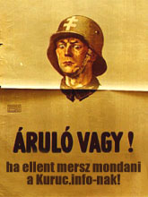

DROID-666
2006.12.28.
blog
droidzóna
levrov
A kuruc.info teljes stábja véletlenül épp a 666. droidsorszámot kapja. Nem hittem volna, hogy egyszer beküzdik ide magukat, hiszen valaha korrekt kis portálocskának indultak, mint tudjátok, magam is teljes mellszélességgel támogattam õket, cikkekkel is. Mostanra azonban haragban vagyunk, mert - biztosan emlékeztek - szakmai színvonaluk hihetetlen lecsökkenése okán kénytelen voltam elhatárolódni tõlük. Nem az általuk képviselt ideológiától, hanem attól a színvonaltól, ahogy azt elõadták. No, hát ezen nagyon megsértõdtek ám.

A minap már bemutattam itt egyik levelüket, amelyben felháborodottan követelik, hogy kérjek tõlük bocsánatot, amiért szakmai kifogást támasztottam lapjuk ellen. (Ha valaki erre sem emlékezne: elõször belenyúltak egy cikkembe a kérdezésem nélkül, aztán közöltek egy különösen idétlen írást arról, hogy október 23-án egy rendõrnél "náci pisztolyt" láttak. Röhej.) Ekkor megfenyegettek "leleplezõ cikkek" közlésével rólam. Ezt a levelet tettem közzé tegnap. Még aznap este megjött a folytatás. Ebben a következõ állt:
Felszólítunk, hogy távolítsd el oldaladról általad nyilvánosság elé tárt magánlevelünket, ellenkezõ esetben újabb jogi következményeknek nézel elébe a PTK és a BTK alapján. Korábbi, több személlyel és szervezettel kapcsolatos valótlan és sértõ tényállításaid okán ugyancsak.
Kuruc.info
Húha, köhög a bolha. Azt sem tudni, ki írta ezt a levelet, mert a szerkesztõség címérõl a jelek szerint többen is írogatnak. Tudnivaló, hogy a kuruc.info jogilag nem létezik, tehát nem perelhet és nem is szólíthat fel. Különösen nem egy nekem címzett levél nyilvánosságra hozatalát nem tilthatja meg. Ennyit tud valamelyik injekciós házi jogtudor. Az már eszükbe sem jut, hogy ha ciki, amit írnak, akkor ne írják meg. Azt szintén nem közlik, hogy mely személyek és szervezetek nevében kíván majd jogi képviselõként fellépni ez a nem létezõ szervezet, és mivel sértettem én meg szegényeket.
A leendõ leleplezõ cikk egyébként a következõket fogja tartalmazni:
- mit írtam én 1956-ról, két évvel ezelõtt (egész pontosan arról, hogy mit lát az egészbõl egy átlagos huszonéves)
- miért "barátkozom" én fialajánosokkal, havashenrikekkel, sõt, tótavéárpádokkal
- állítólag krisnás vagyok, ami szégyen
- a blogom tele van "szakmai" hibákkal, bezzeg a Kuruc.info
- a nekik írt cikkeim is mind szarok voltak, csak megtûrtek.
A várható kulcsszavak: "jellemtelen", "hamarabb utolérik, mint a sánta kutyát", "hálátlan", illetve valószínûleg leszek még tolvaj és bûnözõ is.
A Kuruc.info szerkesztõi szerint egyébként minõsült már árulónak egyébként Toroczkai László is (bár ez már elmúlt), vagy Z. Kárpát Dániel, a Kárpátia magazin fõszerkesztõje, de ide tartozik G. Kirkovits István is, a hunhir.hu-tól, és hasonlóan nem túl hízelgõ véleménnyel vannak még a nemzeti radikális mozgalom legtöbb ismert alakjáról. Kérdés, ki a szalonképes a Kuruc.info számára.
| << elõzõ droid | következõ droid >> |